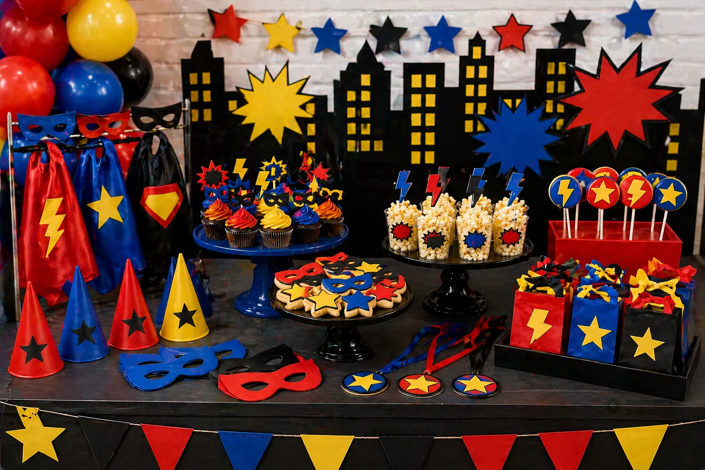
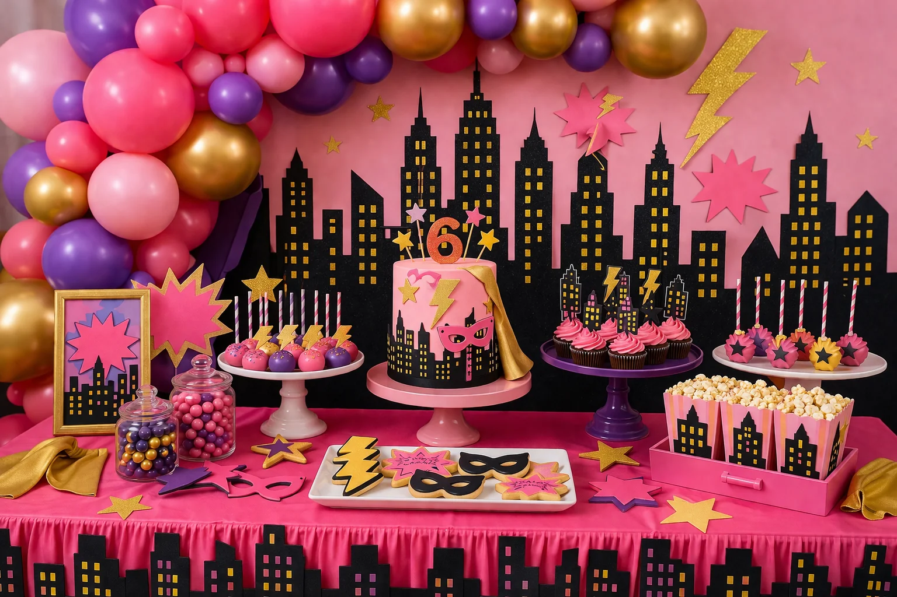

A superhero party is a bold, colourful and action-packed theme for a children's birthday. With bright balloon garlands, city skyline backdrops, mask cupcakes, lightning bolt cookies and a striking birthday cake, a superhero dessert table can feel full of energy and personality.
At Little Moment Studio, our focus is balloon styling and celebration setups. We do not make cakes or cupcakes ourselves, but we know how important the dessert table is to the overall party look. This guide is designed as superhero party inspiration — colour palettes, balloon ideas, three theme approaches and styling details that all work together.
We recommend keeping the styling generic superhero rather than tied to a specific licensed character. Masks, capes, stars, lightning bolts and city skyline details create a bold, recognisable theme without needing to copy a film or comic brand — and it gives much more freedom with colours.
If you would like cupcakes or a cake to complement your balloon display, we are happy to recommend a trusted local cake maker.
Superhero Party Colour Palettes
Start with the colour palette before choosing balloons, cake or sweet treats. Pick three to five colours and repeat them across every element on the table.
Classic Superhero
Red, royal blue, yellow and black. Bold, bright and works for most ages.
City Skyline
Navy, black, gold and silver. Dramatic and cinematic.
Pink Superhero
Pink, purple, gold and black. Strong theme, glam finish.
Comic Book
Red, yellow, black and blue. High contrast and graphic.
Idea 1: Classic Red, Blue & Yellow Superhero Table
A classic red, blue and yellow superhero table is the most instantly recognisable approach. It works well for younger children because the colours are energetic, clear and feel genuinely exciting without needing any specific character reference.
| Element | Classic Superhero Idea |
|---|---|
| Balloon garland | Red, royal blue and yellow with black or silver accents |
| Backdrop | City skyline silhouette or comic burst shapes |
| Cake | City skyline, mask or lightning bolt cake in party colours |
| Cupcakes | Red, blue and yellow swirls with fondant mask toppers |
| Cookies | Masks, stars, lightning bolts and shields |
| Cake pops | Star pops in party colours |
| Props | Masks, capes, star shapes and bold comic cut-outs |
| Stands | Black cake stands and bold coloured trays |
This is the strongest all-round superhero look because the palette is clear, photographs well and works for children of most ages. The key is keeping the three main colours balanced — using black only as a sharp accent rather than a dominant colour keeps the table feeling bright rather than dark.
Balloon tip
For a classic superhero garland, use red, royal blue and yellow latex balloons as the base, then add black or silver chrome balloons as accents every few balloons. Foil star balloons work well at the ends or as standalone clusters beside the table.
Idea 2: Comic Book City Skyline Table

Comic book city skyline superhero party table styled by Little Moment Studio, Sittingbourne — navy, black, gold and yellow with skyline backdrop
A city skyline table gives the superhero theme a stronger story. It makes the dessert table feel like a comic book scene and works especially well when the balloons frame a backdrop with building silhouettes and starburst shapes behind the cake.
| Element | City Skyline Idea |
|---|---|
| Balloon garland | Navy, black and yellow with silver chrome accents |
| Backdrop | Black city skyline with yellow window details |
| Cake | Blue and black city skyline cake |
| Cupcakes | Navy and yellow swirls with gold star or mask toppers |
| Cookies | Masks, lightning bolts, city building shapes |
| Cake pops | Gold star pops or black and yellow pops |
| Sweets | Black, yellow and navy colour-matched sweet jars |
| Stands | Black cake stands with gold or metallic trays |
This version of the superhero theme feels more cinematic than the classic red and blue approach. It suits slightly older children and also works well as a dual-audience birthday where parents appreciate the more considered colour story.
Idea 3: Pink, Purple & Gold Superhero Table

Pink, purple and gold superhero party table — a glam alternative to the classic red and blue colour palette
A pink, purple and gold superhero table is a softer but still powerful version of the theme. It still feels bold and action-packed, but gives the party a brighter, more glamorous finish. It is a strong option for a child who wants a superhero theme but not the traditional primary colour palette.
| Element | Pink Superhero Idea |
|---|---|
| Balloon garland | Pink, purple and gold chrome with black accents |
| Backdrop | Pink city skyline or starburst shapes in pink and gold |
| Cake | Pink and purple cake with gold star or mask detail |
| Cupcakes | Pink and purple swirls with gold mask toppers |
| Cookies | Pink masks, gold stars and lightning bolts |
| Cake pops | Gold star pops or pink and purple pops |
| Props | Gold stars, pink masks, glitter-style star decorations |
| Stands | Gold or rose gold trays with black accents |
Colour tip
Gold chrome balloons are the key to making this palette feel premium rather than just pink. Use them sparingly — three or four gold chrome balloons in a garland of pink and purple latex is enough to lift the whole look without overpowering it.
What to Include on a Superhero Dessert Table
A superhero dessert table can be as simple or as full as the party requires. Start with the cake and cupcakes, then add cookies, cake pops and sweet jars to fill the table.
| Treat | Superhero Party Idea |
|---|---|
| Birthday cake | City skyline, mask, star or lightning bolt design |
| Cupcakes | Bold swirls with mask, star or lightning bolt toppers |
| Cookies | Masks, stars, lightning bolts, capes and shields |
| Cake pops | Star pops or colour-matched pops in party colours |
| Sweet jars | Red, blue, yellow or pink sweets matched to palette |
| Popcorn cups | Good for a training camp or activity party |
| Brownies | Dark “city block” style treats with bold icing |
For most children's parties, one cake, twelve to twenty-four cupcakes, cookies and cake pops is plenty. Props such as masks, stars and city skyline cut-outs fill the remaining space without cluttering the table with more food than can be eaten.
For a practical guide to arranging the table layout, see our guide to how to style a dessert table for a children's party.
Superhero Balloon Ideas
The balloon display creates most of the visual impact around the dessert table. A garland that frames the backdrop and table is the most effective approach for a superhero party.
| Theme | Balloon Colours |
|---|---|
| Classic superhero | Red, royal blue, yellow with black or silver accents |
| City skyline | Navy, black, silver and yellow |
| Pink superhero | Pink, purple and gold chrome |
| Comic book | Red, yellow, black and blue |
For a more premium result, keep the balloon colours controlled. Three main colours with one metallic accent — silver or gold chrome — creates a cleaner, more considered look than using every colour at once.
See our balloon garlands in Kent page and birthday balloon styling page for packages and availability.
Your Questions Answered
What colours work best for a superhero party?
Red, royal blue, yellow and white create the classic superhero look and work well for most ages. For a more dramatic table, navy, black, silver and yellow give a city skyline feel. Pink, purple, gold and black are popular for a glam superhero theme. Whichever palette you choose, pick three to five colours and repeat them consistently across the balloons, cake, cupcakes and props.
What balloons should I use for a superhero party?
A red, blue and yellow garland is the most recognisable classic choice. Add black or silver chrome balloons as accents for a city effect. For the pink superhero theme, use pink, purple and gold chrome. Foil star balloons and number balloons work well alongside the garland as additional detail.
What cupcakes work well for a superhero party?
Bright buttercream swirls in the party colours with mask, star or lightning bolt toppers are the most popular option. Red, blue and yellow swirls with a fondant mask on each cupcake are simple to source and look strong on the table. For more birthday cupcake ideas, see our birthday cupcake ideas guide.
Can I do a superhero party without using licensed characters?
Yes — and it often looks better. A generic superhero theme using masks, capes, stars, lightning bolts and city skyline details creates a bold party look without being tied to a specific brand. It also gives you freedom to choose any colour palette rather than being locked to a character's colours.
What should I include on a superhero dessert table?
A superhero dessert table typically includes a birthday cake as the centrepiece, twelve to twenty-four cupcakes with themed toppers, mask or lightning bolt cookies, star cake pops and colour-matched sweet jars. Props such as masks, stars and city skyline cut-outs reinforce the theme without adding more food than is needed.
Whether you choose the classic red, blue and yellow approach, the dramatic city skyline look or the glam pink and gold version, the key is repeating the colour palette consistently across every element — balloons, cake, cupcakes, cookies and props. When everything speaks the same colour language, the table feels designed rather than assembled.
For more birthday party inspiration, see our guides to first birthday balloon ideas and dinosaur party balloon and dessert table ideas.
Planning a Superhero Party in Sittingbourne or Kent?
Little Moment Studio creates bold balloon displays and celebration setups for children's birthdays across Sittingbourne and Kent. We can also recommend a trusted local cake maker to complete your superhero dessert table.